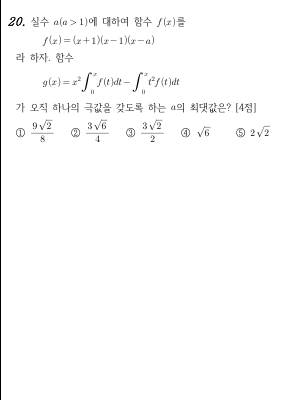

문제 읽기 · 2021 수능 나형 20번
미분하면 깔끔해지는 적분
오답률 79.4%의 킬러입니다. 를 미분하면 복잡한 적분이 마법처럼 정리됩니다. 계산은 라이프니츠 법칙 한 번, 나머지는 그래프 읽기예요.

가 오직 하나의 극값을 갖도록 하는 의 최댓값
STEP 1 · g′(x) 구하기
상쇄의 마법
적분의 미분(라이프니츠 법칙)을 쓰는 순간입니다.
빼면 가 상쇄됩니다!
에서 항이 사라지는 이유는?
를 미분할 때 로 착각하지 마세요. 적분 변수는 , 미분 변수는 입니다.
STEP 2 · 극값은 g′의 부호 변화
부호는 가 결정한다
라 두면, 복잡한 식이 하나의 핵심으로 압축됩니다.
라 두면:
이므로 ( 제외), 의 부호 = 의 부호입니다!
따라서 의 극값은 가 부호를 바꾸는 점에서만 생깁니다. (에서는 이라 부호가 안 바뀝니다.)
이 의 극값이 아닌 이유는?
"이면 극값"이라는 착각을 버리세요. 극값은 부호 변화입니다.
실험실 · 직접 움직이기
의 부호 변화를 눈으로
슬라이더를 움직이며 가 부호를 몇 번 바꾸는지 세어 봅시다.
가 작을 때는 부호 변화 1번 → 극값 1개. 를 키우면 어느 순간 가 축에 접합니다 (중근). 바로 그때가 경계! 더 키우면 부호 변화 3번 → 극값 3개.
STEP 3 · 경계 구하기
경계: 가 접하는 순간
"오직 하나의 극값"에서 "3개의 극값"으로 바뀌는 경계입니다.
는 최고차항이 양수인 삼차함수입니다. 부호 변화가 1번에서 3번으로 바뀌는 경계에서는 가 축에 접합니다 (중근을 갖습니다).
중근 에서는 이면서 입니다:
두 식을 연립하면 을 얻습니다. 이므로:
일 때 의 모습은?
둘째 식에서 . 이를 첫째 식에 대입하고 정리하면 , 즉 .
이면 로 에 모순. 이면 . 일 때 (은 으로 탈락).
STEP 4 · 최댓값 확정 + 정답
이 경계임을 확인합니다.
- 에서만 부호가 바뀝니다 (음→양).
- (중근)에서는 접하기만 하고 부호가 안 바뀝니다.
- 따라서 의 부호 변화는 1번 → 의 극값은 오직 1개 ✓
이면 중근이 두 개의 실근으로 갈라져 부호 변화가 3번이 됩니다.
④